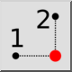
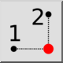
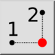
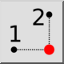

Y/X de la posición
Barra de herramienta / icono:
 

Menú: Forzar > Y/X de la posición
Acceso directo: ., Y
Comandos: .y
Esta es una traducción automática.
Barra de herramienta / icono:
 

Menú: Forzar > Y/X de la posición
Acceso directo: ., Y
Comandos: .y
Esta herramienta funciona de la misma forma que la herramienta X/Y desde Puntos, pero con el orden opuesto de introducción de coordenadas